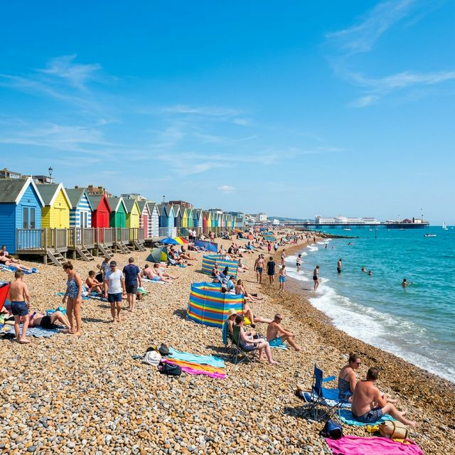
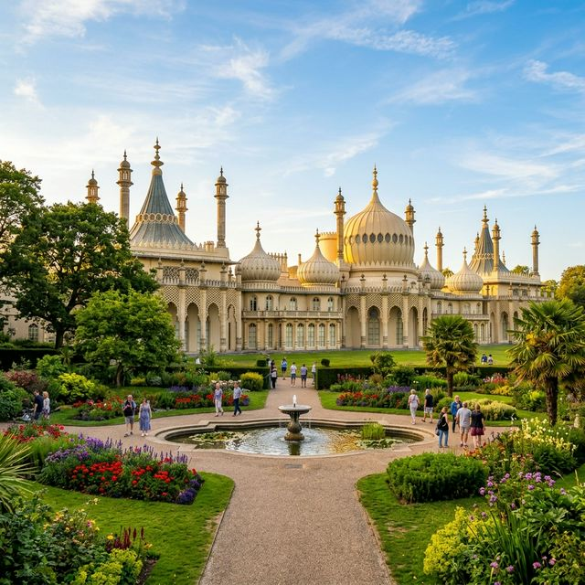

Brighton is one of the UK's most rewarding day trip destinations. Just 53 minutes from London Victoria by fast train, this vibrant seaside city packs an extraordinary amount into a small, walkable area. Whether you're a first-time visitor or returning to rediscover old favourites, this one-day Brighton itinerary is your perfect guide.
Getting There
53 min from London Victoria
Getting Around
Mostly walkable city centre
Budget
£40–80 per person for a full day
Best Time
Spring to early Autumn
Your Perfect One-Day Brighton Itinerary
Start with a Brighton Beach Walk
Begin your day with a refreshing stroll along Brighton Beach. The morning light on the pebbles is magical, the seafront is peaceful, and the sea air will wake you right up. Walk east towards the Palace Pier and take in the stunning views.
💡 Tip: Grab a coffee from one of the many seafront cafés to enjoy while you walk.
Explore Brighton Palace Pier
Head to the iconic Brighton Palace Pier — the city's most famous landmark and a must-visit on any Brighton travel itinerary. Walk the full length, enjoy the sea views from the end, and take some great photos. The arcades and fairground rides open later if you want to return.
💡 Tip: Entry to the pier is completely free! Ride tokens are purchased separately.
Visit the Royal Pavilion
A short walk from the pier brings you to the extraordinary Royal Pavilion. Allow 1–1.5 hours to explore this breathtaking Indo-Saracenic palace built for King George IV. The banqueting hall, music room and exotic gardens are unmissable. Book tickets online in advance to avoid queues.
💡 Tip: The gardens around the Pavilion are free to visit — perfect for a quick photo stop.

Lunch in The Lanes or North Laine
Wander through The Lanes — Brighton's maze of medieval narrow streets filled with boutique shops and cafés. Grab lunch at one of the many independent restaurants. For brunch-style food, head to North Laine and try Presuming Ed's for legendary pancakes. For a quick bite, Burger Brothers has famous smash burgers.
💡 Tip: If it's sunny, grab takeaway and eat on the beach — the quintessential Brighton experience.
Shop & Explore North Laine
Spend the early afternoon browsing North Laine's eclectic shops — vintage clothing, record stores, independent bookshops, artisan crafts and more. This is the creative heart of Brighton and no two visits are ever the same. Check out Snoopers Paradise for the ultimate vintage treasure hunt.
Ride the British Airways i360
Head back to the seafront for the British Airways i360 — the world's slimmest observation tower. Rise 162 metres above Brighton for breathtaking 360-degree views of the city, South Downs and the English Channel stretching to the horizon. Book slots in advance for the best experience.
💡 Tip: Late afternoon offers beautiful golden hour lighting for photos from the top.
Sunset Dinner at the Seafront
End your day with a memorable seafront dinner as the sun sets over the horizon. The Salt Room offers stunning sea views and the freshest seafood in Brighton — the perfect finale to your one-day Brighton itinerary. Book ahead for a window table to watch the sky turn golden.
💡 Tip: Lucky Beach Café is a more relaxed and budget-friendly beachside option with great food and cocktails.
Evening Stroll & Brighton Nightlife
If you're staying overnight, Brighton's nightlife is legendary. The seafront and The Lanes transform at night with bars, live music venues and clubs. Walk the promenade one last time as the city lights reflect on the water — a truly magical end to your Brighton day trip.
Brighton Day Trip Tips
Getting there: Take the Southern or Thameslink train from London Victoria, St Pancras or London Bridge. Buying in advance online saves money.
Getting around: Brighton's city centre is compact and very walkable. Most of the top attractions are within 15–20 minutes' walk of the train station. Taxis and Ubers are available for longer distances or tired feet.
Best time to visit: Brighton is great year-round, but April–October offers the best weather. Summer brings more atmosphere on the beach, while spring and early autumn are less crowded.
Follow us on Instagram: @brighton.travelers for daily inspiration and hidden gems.
More Brighton Guides
Want a Website Like This?
This site was built by Zayntic Labs — a modern web design agency for UK businesses.
Visit Zayntic Labs 🚀